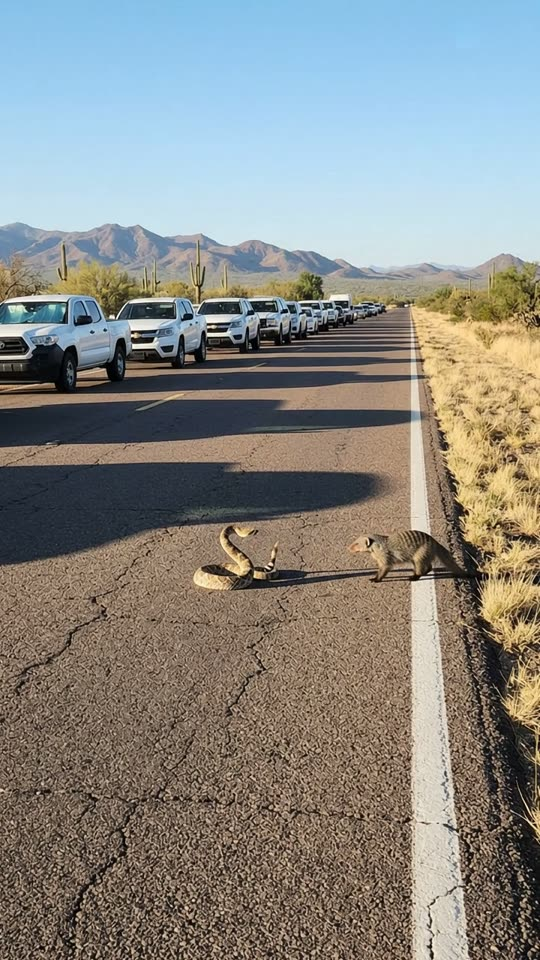
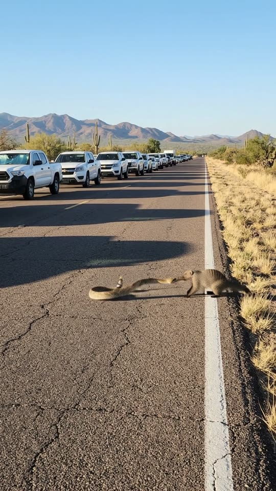
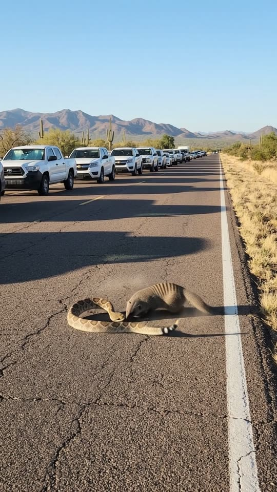
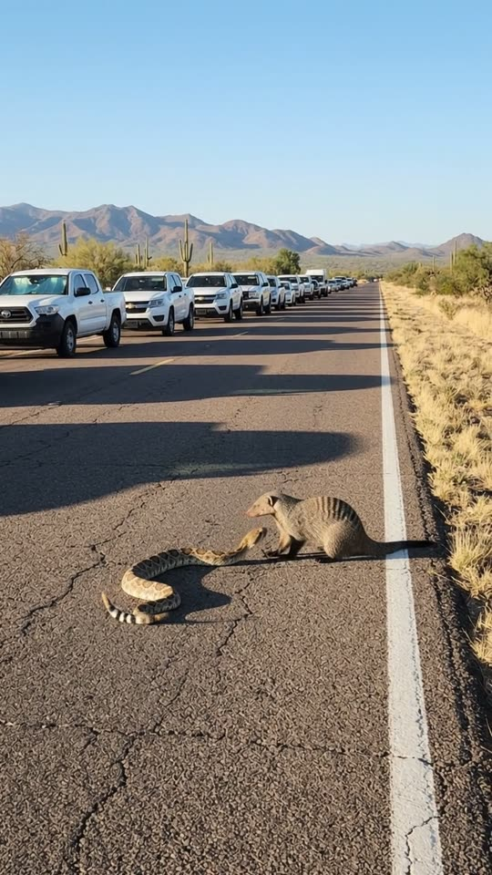

Free prompt pack
Two misses.One bite.
A rattlesnake and a mongoose face off in the middle of a desert highway while a whole line of cars waits. The snake strikes and misses. Strikes again, misses again. Then the mongoose stops dodging. One still image and one prompt, in one take.
Both prompts, in the order I ran them. Tap when the snake pulls back to dodge, twice, then bite to reveal each prompt. Tap the road for a tumbleweed.
The first frame
Just the animals and the cars. This image is frame one: a desert highway at golden hour, a rattlesnake coiled in an S, a banded mongoose crouched sixty centimetres away, and a line of stopped white cars in the other lane.
Watch out
Describe what fills the frame, not what you want out of it. Badgeless grilles and windscreens bright with reflected sky took out the logos and the drivers. Writing 'no people' in an image prompt puts people in.

The prompt 145 words
Real photo taken at chest height standing in the right lane of a two-lane desert highway in Arizona, late afternoon, looking straight down the road. Five metres ahead, in the middle of the lane and in sharp focus, a real rattlesnake lies coiled with its head raised in an S and facing right: tan scales with dark brown diamonds, its rattle held up. Sixty centimetres to its right, a real banded mongoose crouches low facing it, its snout pointed at the snake's head: grizzled grey-brown fur, dark bands across its back, a long tapering tail. In the left lane, a long line of stopped plain white pickups and SUVs with badgeless grilles runs to the horizon, their windscreens bright with reflected sky. White edge line, saguaro cacti, dry golden grass, purple-brown mountains, clear blue sky. Low warm sun from the right, long shadows, natural colour.
Strike, miss, bite
Ten seconds, handheld from the road. Add the image as the reference, set 10 s, 9:16, 720p and audio on, and paste the prompt whole.
- 0–2 sface-off
- 2–4.2 stwo misses
- 4.2–6 sthe bite
- 6–10 sit doesn't let go
Watch out
A fight is a list of moves. Give every strike, miss and dodge its own beat with its own seconds, and say where the snake's head ends: inside the mongoose's jaws.
Fragments



The prompt 1091 words
FORMAT Real handheld video filmed by someone standing in the road of a desert highway, seen as the finished exported video file: the full picture edge to edge, nothing on top of it. Whatever records the picture is never in frame. One continuous take in real time, from one single spot, no cuts. Vertical frame. The video runs at 24 fps. No frame is repeated. Real time, 1x speed, never slow motion. SCENE On a desert highway in Arizona, a line of cars has stopped while a rattlesnake and a mongoose face off in the road, five metres from us. The snake strikes twice and misses; the mongoose dodges both, then lunges and bites it just behind the head. They roll once in the dust, and the mongoose comes up sitting on its haunches with the snake's head clamped in its jaws. The face-off is already happening in the first frame. The take ends with the mongoose holding the snake still in the empty lane. REFERENCE IMAGE Use it for the snake, the mongoose, the road, the cars, the desert and the light. Everything matches it exactly, zero drift, no smoothing. The movement is described below. THE SNAKE One real western diamondback rattlesnake, about 1.3 m long: tan scales with dark brown diamonds edged in cream, a broad triangular head, a black-and-white banded tail ending in a rattle. It starts coiled with its head raised in an S, facing right, toward the mongoose. It moves like a real rattlesnake: slow swaying, a flicking tongue, then strikes too fast to follow. THE MONGOOSE One real banded mongoose, about 55 cm long plus its tail: grizzled grey-brown fur with dark bands across its back, a pointed snout, small round ears, a long tapering tail. It starts crouched low facing left, toward the snake. It moves like a real mongoose: quick sideways hops, bristled fur, eyes locked on the snake's head. THE CARS A long line of stopped plain white pickups and SUVs in the left lane, running to the horizon, engines idling. They never move. Their windscreens are bright with reflected sky; nobody is seen inside or outside them. LOCATION MAP We stand in the right lane at chest height, looking straight down the highway. The snake and the mongoose are five metres ahead in the middle of the right lane, the white edge line just to their right. The stopped cars fill the left lane to the horizon, their long shadows falling across the road. Saguaro cacti and dry golden grass along both sides, purple-brown mountains on the horizon, clear blue sky. FIRST FRAME The snake coiled at x 25-45%, y 56-66%, its head raised and facing right; the mongoose crouched at x 52-75%, y 57-65%, facing left. The stopped cars at x 0-45%, y 30-48%. The white edge line from x 92% at the bottom of the frame to x 72% at the horizon. The mountains at y 12-24%. Empty asphalt between us and the animals. Instant read: a snake and a mongoose about to fight in a road, cars stopped to watch. No delayed reveal. CAMERA Handheld, standing still at chest height in the right lane: only the small natural sway of someone holding it, a small flinch at each strike. It stays on this one spot for the whole take and keeps the animals in the middle of the frame. It never cuts, never zooms, never walks forward, never goes down to the animals' level, never shows the person filming. ACTION TIMING 0–2.0 s — The face-off: the snake's raised head sways, its tongue flicking, its rattle buzzing upright; the mongoose steps sideways around it, low, fur bristled, eyes on its head. 2.0–2.6 s — The snake strikes in a fast straight lunge; the mongoose springs back and to the side, the fangs missing its face by a hand's width; a small puff of dust. The view flinches. 2.6–4.2 s — The snake pulls back into its S; the mongoose feints in and out twice; the snake strikes again and misses. 4.2–6.0 s — While the snake is still stretched out from the second strike, the mongoose lunges and bites it just behind the head; the snake's body whips and loops around the mongoose, and they roll over once on the asphalt in a low puff of dust. 6.0–8.0 s — The mongoose comes up and sits on its haunches, the snake's head clamped in its jaws, the snake's neck rising from the asphalt to its mouth, the body lying in loose loops, the tail twitching. 8.0–10 s — The mongoose holds still, its sides heaving; the snake's body goes slack. Hold to the last frame. PHYSICS AND SCALE Real size: the snake is about 1.3 m long, the mongoose about 55 cm plus its tail, the cars full size behind them. Real speed: each strike takes a fifth of a second; the mongoose's dodge is just as fast. The dust is a low puff that settles within a second. The snake's head ends inside the mongoose's jaws and stays there. No blood. One snake, one mongoose. Nothing morphs. NO FULL-FRAME EVENTS Nothing fills the frame: the dust stays low on the asphalt and the animals are visible in every frame. The picture never goes white, brown or blurred from edge to edge. LIGHTING Late afternoon desert sun, low and warm from frame-right: long shadows of the cars and the animals falling toward frame-left, bright asphalt. One light source, the sun. AUDIO No music, no score, no narration, no subtitles. The dry buzz of the rattle from the first frame, a hiss at each strike, the scuff of claws and the slap of the snake's body on the asphalt, car engines idling, desert wind. No voices, no words. LOOK Real handheld footage, seen as the finished exported file: the animals in sharp focus, natural warm colour, crisp detail, light compression, no colour grade, no film grain, no lens flare, no slow motion, never CGI. No camera app interface: no shutter button, no gallery thumbnail, no record button, no icons, no timer, no recording dot, no frame lines. POSITIVE LOCKS One rattlesnake, one mongoose, a line of stopped cars. No people anywhere in frame: nobody on the road, nobody at the roadside, nobody visible in the cars, no hands, no phones. No blood. No captions, no subtitles, no on-screen text, no watermark, no logos or badges on the cars, nothing on top of the picture. ONE SNAKE. ONE MONGOOSE. NO PEOPLE. NO CUTS. NO ZOOM. NO SLOW MOTION. NO MUSIC.
Rule 01
Cut the clips, keep the ending
The original is three ten-second clips stitched together. One take only fits the best of it: the face-off, two misses, the bite, the hold.
Rule 02
Start them close
Sixty centimetres apart in the first frame. The closer the animals start, the less the model invents on the way to the fight.
Rule 03
Real speed, no blood
A strike takes a fifth of a second. Write the number and it stops floating. Keep it clean and the reel stays up.
That's the whole build
Now go stageyour own standoff.
If yours works, send it over. I read every DM and the good ones end up on the account.
@martiiifons